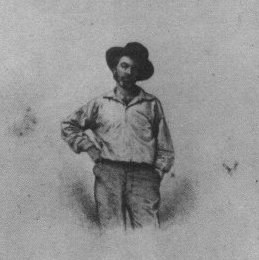

Walt WhitmanFoglie d’erba, 1855–1892
Io celebro me stesso, e canto me stesso,
e ciò che io assumo tu lo assumerai,
perché ogni atomo che appartiene a me appartiene anche a te.
e ciò che io assumo tu lo assumerai,
perché ogni atomo che appartiene a me appartiene anche a te.
I celebrate myself, and sing myself, / And what I assume you shall assume, / For every atom belonging to me as good belongs to you.